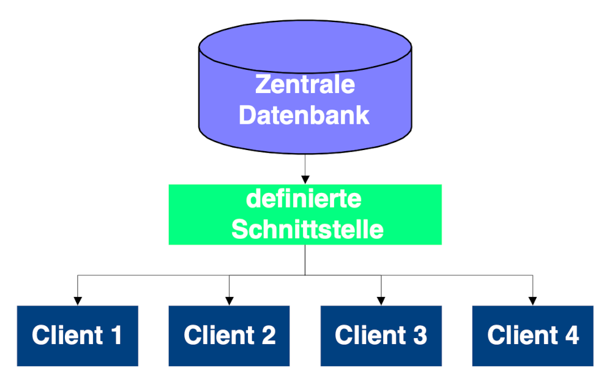

Methoden
Methoden
Die Methoden, die in der Konzeptionsphase in dem Wissensmanagementsystem implementiert werden, sind nur ein kleiner Teil der benötigten Methoden. Sie ermöglichen es, die Mächtigkeit des Systems zu demonstrieren, müssen aber noch um weitere ergänzt werden.
White Page Dienst
Was für öffentliche Telefonnetze das Telefonbuch oder die gelben Seiten darstellen, sind im Internet die White Page Dienste. Ein solcher Dienst zeichnet sich dadurch aus, dass Personen nach bestimmten Kriterien gesucht werden können. So ist es beispielsweise möglich, zu einer Emailadresse auch Telefonnummer oder Adresse zu recherchieren.
In einem Wissensmanagementsystem ist es nützlich, die Informationen, die vom White Page Dienst geliefert werden, über die rein administrativen Angaben (Email, Telefon, Adresse, etc., siehe 1) noch um wissensrelevante Informationen ,wie Fachgebiete eines Mitarbeiters, Teilnahme an Projekten oder Fortbildungen, zu erweitern 2.
Der White Page Dienst kann außerdem dazu genutzt werden, alle neuen Mitarbeiter automatisch vorzustellen. Dieser Vorgang erleichtert dem neuen Mitarbeiter die Integration und macht gleichzeitig dessen Kenntnisse im Institut bekannt.
Zu beachten ist bei einem solchen Dienst der Datenschutz. Alle Maßnahmen sind in jedem Fall mit dem Datenschutzbeauftragten abzuklären. Die beste Möglichkeit, Probleme zu umgehen, ist, dem Mitarbeiter die Entscheidung zu überlassen, ob seine Daten öffentlich verfügbar sind.
Diskussionsforum
Für jede Gruppierung im Institut soll es möglich sein, Diskussionsforen zu bestimmten Themen einzurichten. Diese Foren sollen an bestehende Maillisten angeknüpft werden können und müssen ihre Daten in einer Datenbank abspeichern, um Weiterverwendung zu ermöglichen.
Verwaltung von Teilbereichen dezentralisierbar
Neben der zentralen Benutzerverwaltung muss es möglich sein, in einzelnen Bereichen lokale Rechte zu vergeben. Der Nutzen einer solchen Möglichkeit soll an einem Beispiel verdeutlicht werden.
Der Bereich Personalentwicklung wird am IIS von einer Person betreut, die im Folgenden Person X genannt wird. Es wird also einen Bereich Personalentwicklung in dem System geben, dessen Administrator Person X ist. Im restlichen System ist Person X ganz normaler Mitarbeiter und mit keinen Zusatzrechten ausgestattet. Person X kann ihrerseits die Verwaltung bestimmter Unterbereiche an andere Personen übertragen.

Newssektion
Eine Newssektion soll die Möglichkeit bieten, zu bestimmten Themen Neuigkeiten zu veröffentlichen. Es muss die Möglichkeit bestehen, dass bestimmte Mitarbeiter ihre Mitteilungen direkt veröffentlichen können (zum Beispiel Leitungskreisprotokolle), während andere Beiträge zuerst geprüft werden müssen, um Missbrauch zu vermeiden. Alle Mitteilungen sollen in einem übersichtlichen Format auf der Einstiegsseite präsentiert werden.
Pro Tag sollten maximal 5-10 neue Beiträge erscheinen. Beiträge, die älter als ein zu definierender Zeitraum sind, werden aus der Newssektion gelöscht, stehen aber weiterhin über eine Suchmaske zur Verfügung.
Privater Bereich
Jeder Mitarbeiter hat einen eigenen Bereich, in dem er eigene Inhalte ablegen und zusätzliche Einstellungen für sein Profil vornehmen kann.
Dieser private Bereich dient zum Einen als Visitenkarte des Mitarbeiters im Institut, stellt auf der anderen Seite aber auch eine Arbeitsumgebung für den Mitarbeiter dar, die er sich nach seinen Wünschen einrichten kann.
Möglichkeit datenbankgestützter Anwendungen
Die Erstellung neuer datenbankgestützter Applikationen und das Einrichten von Schnittstellen muss für den Endanwender so einfach wie möglich sein. Prinzipiell sollten zwei unterschiedliche Anwendungsfälle unterstützt werden.
Daten, die lokal in Datenbanken gespeichert werden (MS Access, Oracle, Filemaker, etc.), werden über einen Synchronisationsmechanismus in eine zentrale Datenbank übertragen. Dort stehen sie dann dem Wissensmanagementsystem zur Verfügung.
Ein Beispiel hierfür ist eine Microsoft Access Datenbank, in der Daten von Personen geführt werden, die sich für ein Praktikum am IIS interessieren. Der Verwalter dieser Liste soll in der Lage sein, nur informelle Daten zu veröffentlichen (zum Beispiel Studiengang, Vorkenntnisse,...), und persönliche Daten wie Adresse, Telefonnummer, etc. nur in seiner lokalen Datenbank zu führen.
Das Szenario zentrale Datenbank zielt auf Anwendungenab,bei denen man aus einem zentralen Datenbestand eine Auswahl selektieren möchte. Der Vorteil dieser Methode besteht darin, dass viele Einzelapplikationen auf einen zentralen Datenbestand zurückgreifen könne und die Notwendigkeit für mehrfache (=redundante) Datenhaltung entfällt.

Beispiel hierfür ist eine Datenbank, die Fachartikel oder Datenblätter verwaltet. Während die aufzunehmenden Daten immer gleich sind (Titel, Autor, Zusammenfassung,...), hat jeder Anwender sehr spezielle Anforderungen an seine Sicht auf die Daten. So könnte ein Mitarbeiter an allen Artikeln interessiert sein, die sich mit dem Thema UMTS befassen, während ein anderer nach Artikeln von bestimmten Autoren sucht und diese in ein Worddokument einbinden möchte.
Um derartige Anwendungen zu ermöglichen, muss für das gesamte Institut ein Datenbankserver eingerichtet werden, auf dem Personen oder Gruppierungen Bereiche anfordern können. Diese Datenbereiche müssen über die standardisierte Datenbankschnittstelle ODBC zugänglich sein. Im Einzelfall bedeutet das, dass Daten von allen ODBC-fähigen Softwarepaketen (zum Beispiel Microsoft Word, Microsoft Excel, Microsoft Access,...) geschrieben und gelesen werden können, sofern die entsprechenden Berechtigungen vorhanden sind.
Die Notwendigkeit, neue Datenbanktechniken erlernen zu müssen, entfällt. Der Endanwender kann weiterhin in der gewohnten Umgebung arbeiten. Die Problematiken Backup und Sicherheit müssen nur einmal für den zentralen Server gelöst werden. Bei den Nutzern der Datenbank fällt kein zusätzlicher, administrativer Aufwand an.
Im System müssen komfortable Werkzeuge vorhanden sein, um Daten aus Datenbanken abzufragen un neue Daten einzugeben.
Suchfunktionen
Das System muss die Möglichkeit bieten, auf dem kompletten Inhalt (Dokumente, HowTos, Diskussionsgruppen, etc.) Volltextsuchen durchzuführen. Die Verantwortlichen für die einzelnen Inhalte sollen dafür keine zusätzlichen Anstrengungen unternehmen müssen. Die Volltextindizierung muss automatisch verlaufen.
Die Bereiche, die indiziert werden, sollen zusätzlich durch externe Bereiche, wie zum Beispiel Webseiten, ergänzbar sein. Diese Eigenschaft ermöglicht es, wichtige Internetangebote in die Suche einzubeziehen.
-
RFC 2218 - A Common Schema for the Internet White Pages Service. 1997. URL: http://www.faqs.org/rfcs/rfc2218.html. ↩
-
Steve Offsey. Knowledge Management: Linking People to Knowledge for Bottom Line Results. 1997. URL: https://www.emerald.com/insight/content/doi/10.1108/EUM0000000004586/full/html. ↩